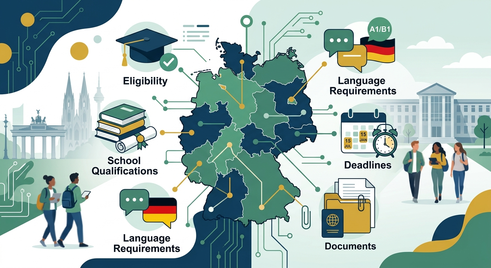
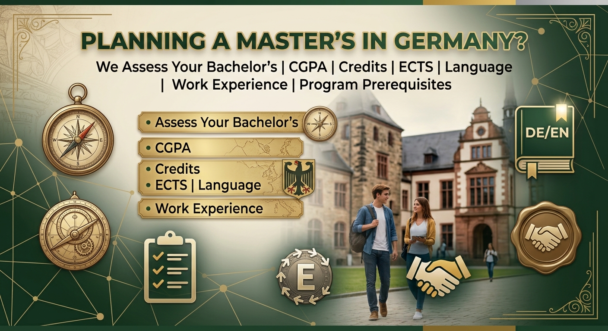

Bachelor’s
Planning a Bachelor’s in Germany?
We help students understand eligibility, school qualifications, language requirements, deadlines, and documents.
Explore Bachelor’s OptionsDeutschPath
Germany-focused guidance for Bachelor’s and Master’s applicants — from university selection and application preparation to admission and embassy documentation.
The situation
German universities can have different admission requirements, application portals, deadlines, document requirements and application procedures.
Students often struggle with:
We help you make sense of the process.
Services
One-hour session to understand your profile, goals and Germany study options.
Book a session 02Review your academic and professional background.
See how it works 03Identify programs that may fit your profile and goals.
See university support 04Guidance through university-specific application procedures.
See the process 05Guidance for relevant uni-assist and VPD processes.
Understand the routes 06Organize and review your application documents.
See document support 07Guidance for Germany student visa documentation.
See embassy guidance 08Help understanding the online appointment process.
See what is covered 09Continue receiving guidance when questions arise.
See student supportHow it works
Nine clear steps. Some programs skip or reorder a step — your shortlist decides which ones apply.
Prepare
A one-hour conversation about your profile and next steps.
Academics, language background, and relevant work experience.
Programs that may fit you — not a shared list for everyone.
Apply
Deadlines, routes, and the order of tasks.
Transcripts, language proof, CV, and motivation letter.
uni-assist, a university portal, or another named route.
Arrive
Help reading an offer. The university decides.
Guidance for the student visa document file.
Practical orientation once plans are confirmed.
Germany only
A professional Germany education path — not a generic study-abroad desk.
University fit
German universities have different admission structures and procedures. We don’t hand every student the same list.
Your academic background, subject requirements, language qualifications and career goals matter.
Get My University OptionsApplication routes
These are routes you may encounter — not a sequence every university follows. The exact path depends on the program.
Do not assume every German university uses uni-assist. Understand your application route →

Bachelor’s
We help students understand eligibility, school qualifications, language requirements, deadlines, and documents.
Explore Bachelor’s Options
Master’s
We assess your bachelor’s, CGPA, credits, ECTS, language, work experience, and program prerequisites.
Explore Master’s OptionsTransparency
Universities make admission decisions independently. German authorities make visa decisions independently. Our role is to help you prepare and stay organized.
Yes. DeutschPath focuses exclusively on Germany.
Yes. Guidance is available for Bachelor’s and Master’s applicants.
Yes, the first consultation is one hour and free.
No. Universities and German authorities decide independently.
Yes, where those routes apply to your program.
Yes. Continuous student support is part of our service model.
Begin
Tell us about your academic background, goals and plans. We’ll help you understand your next steps.